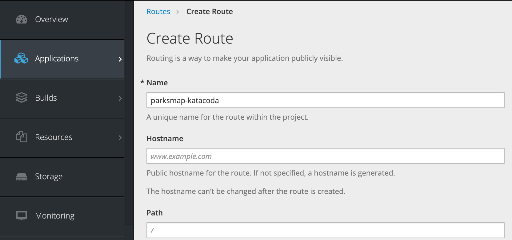

OpenShift Studies
OpenShift Container Platform is about developing, deploying, and running containerized applications. It is based on docker and kubernetes and add the following features:
- Routes: represents the way external clients are able to access applications running in OpenShift
- Deployment config: Represents the set of containers included in a pod, and the deployment strategies to be used.
- CLI, REST API for administration or Web Console, and Eclipse plugin.
- Built to be multi tenants. You can also grant other users access to any of your projects.
- Use the concept of project to allow for controlled accesses and quotas for developers. Projects are mapped to k8s namespaces.
- Source-to-image (S2I) is a tool for building reproducible Docker images. S2I supports incremental builds which re-use previously downloaded dependencies, and previously built artifacts. OpenShift is S2I-enabled and can use S2I as one of its build mechanisms.
-
Build config: Used by the OpenShift Source-to-Image (S2I) feature to build a container image from application source code stored in a Git repository
-
OpenShift for production comes in several variants:
- OpenShift Origin: from http://openshift.org
- OpenShift Container Platform: integrated with RHEL and supported by RedHat. It allows for building a private or public PaaS cloud.
- OpenShift Online: multi-tenant public cloud managed by Red Hat
- OpenShift Dedicated: single-tenant container application platform hosted on Amazon Web Services (AWS) or Google Cloud Platform and managed by Red Hat.
The way that external clients are able to access applications running in OpenShift is through the OpenShift routing layer. The default OpenShift router (HAProxy) uses the HTTP header of the incoming request to determine where to proxy the connection.
See also my summary on k8s.
Concepts
Openshift is based on kubernetes. It adds the concept of project, mapped to a k8s namespace, to govern the application access control, resource quota and life cycle. It is the top-level element for one to many applications.
We can deploy any docker image as soon as they are well built: such as defining the port any service is exposed on, not needing to run specifically as the root user or other dedicated user, and which embeds a default command for running the application.
The default OpenShift router (HAProxy) uses the HTTP header of the incoming request to determine where to proxy the connection.
Routes defines hostname, service name, port number and TLS settings:

Routes are used to expose app over HTTP. OpenShift can handle termination for secure HTTP connections, or a secure connection can be tunneled through direct to the application, with the application handling termination of the secure connection. Non HTTP applications can be exposed via a tunneled secure connection if the client supports the SNI extension for a secure connection using TLS. A router (ingress controller) forwards HTTP and TLS requests to the service addresses inside the Kubernetes SDN.
OpenShift routes are implemented by a cluster-wide router service, which runs as a containerized application in the OpenShift cluster. The router service uses HAProxy as the default implementation.
Getting started
Use IBM Cloud cluster to get an Openshift cluster..
We can also use openshift online
Here is summary of OC cli commands.
Collaborate
User can be added to an existing project, via the View membership menu on a project. Each user can have different roles. Edit Role can perform most tasks within the project, except tasks related to administration of the project.
Remark
state about the current login session is stored in the home directory of the local user running the oc command, so user need to logout and login to the second cluster he wants to access.
You can get a list of all OpenShift clusters you have ever logged into by running:
oc config get-clusters
Source to image (s2i)
Source to image toolkit aims to simplify the deployment to openshift. It uses a build image to execute an assemble script that builds code and docker image without Dockerfile.
The following figure, shows the resources created by the oc new-app command when the argument is an application source code repository.

From an existing repository, s2i create add a set of elements to define the workflow into the repo. For example the command below will add Dockerfile and scripts to create a build image named ibmcase/buildorderproducer from the local folder where the code is.
s2i create ibmcase/buildorderproducer .
When the assemble script is done, the container image is committed to internal image repository. The CMD part of the dockerfile execute a run script.
Here is another command to build the output image using existing build image on local code:
s2i build --copy . centos/python-36-centos7 ibmcase/orderproducer
Note
s2i takes the code from git, so to use the local code before committing it to github, add the --copy argument.
- OpenShift builds applications against an image stream. The OpenShift installer populates several image streams by default during installation.
oc get is -n openshift
If only a source repository is specified, oc new-app tries to identify the correct image stream to use for building the application
oc command
Create an app and build from a specific context directory.
oc new-app https://github.com/jbcodeforce/refarch-kc-order-ms --context-dir=order-command-ms/